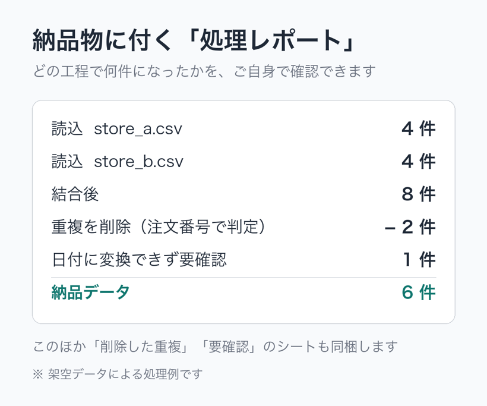
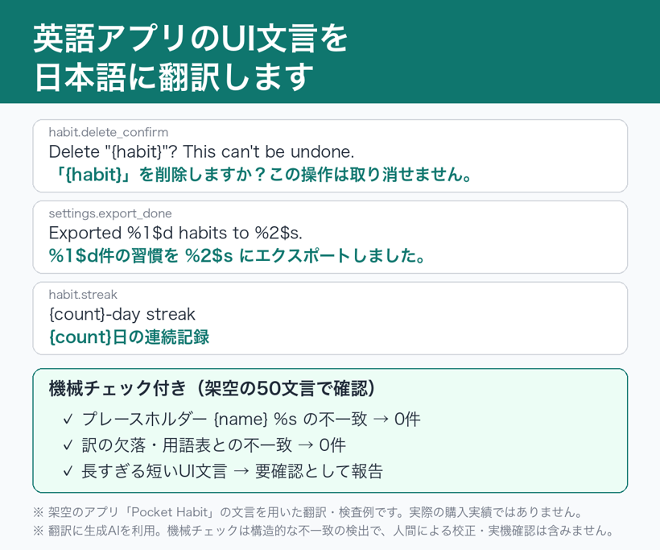
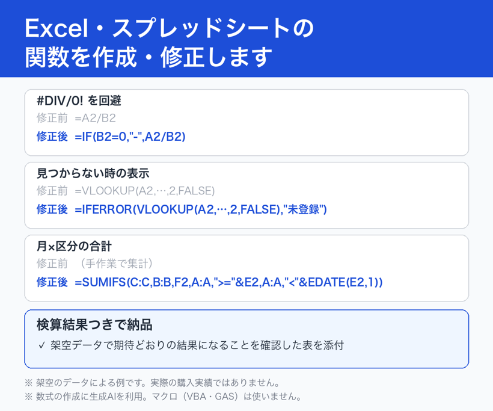

作業見本：CSV整理・UI翻訳・Excel関数
このページの見本は、すべて架空のデータで作成した動作確認の例です。実際のお客様からの受注実績ではありません。作業には生成AI（Claude）を使い、結果を機械的なチェックや検算で確かめています。
1. CSV・Excelの結合と重複削除
店舗ごとに分かれた売上CSV（架空）を1つにまとめ、注文番号で重複を削除した例です。日付の表記ゆれ（2026/10/01 と 2026-10-02）や、商品名の末尾の空白も整えます。

- 納品物：整理後のファイル（CSV または Excel）と、処理レポート（読み込み件数・削除した重複件数・結果件数・日付の統一などの処理内容と件数、要確認の行）
- 件数の確認：「読み込んだデータ行数 ＝ 結果の行数 ＋ 削除した行数」になっているかを毎回確かめます
- 1万行・重複100件の架空データで、処理と件数照合が正しく動くことを確認しています
2. 英語アプリのUI文言の日本語化
架空の習慣管理アプリ「Pocket Habit」の50文言（英語・JSON）を日本語にした例です。
| キー | 英語原文 | 日本語訳 |
|---|---|---|
| onboarding.subtitle | Build small habits that stick. | 小さな習慣を、無理なく続けよう。 |
| onboarding.cta | Get started | はじめる |
| habit.add | Add habit | 習慣を追加 |
| habit.delete | Delete habit | 習慣を削除 |

- 納品物：訳文ファイル（元のファイル形式・キー構成のまま）、英日対照表（CSV）、用語表、確認レポート
- 機械チェック：キーの欠落、空欄、
{name}や%sなどのプレースホルダー、HTMLタグ、用語表との不一致、短いUIで訳が長くなりすぎていないか - この見本のチェック結果：不合格0件、要確認2件（表示幅の目安を超えた短い文言。レポートで知らせる）
- 機械チェックは日本語の自然さや文脈の正しさを保証するものではありません
3. Excel関数の作成と修正
架空の表で、よくある3つのケースの数式を作り、Microsoft Excel で再計算して期待値と一致することを確かめた例です。

| ケース | 数式の例 | 確認 |
|---|---|---|
| 商品コードで単価を引き、未登録は表示する | =IFERROR(VLOOKUP(A2,master!$A$2:$B$4,2,FALSE),"未登録") | 4行すべて期待値と一致 |
| 対象月×区分の合計 | =SUMIFS($C$2:$C$6,$B$2:$B$6,F2,$A$2:$A$6,">="&E2,$A$2:$A$6,"<"&EDATE(E2,1)) | 期待値 1200 と一致 |
| 件数0のときの #DIV/0! を避ける | =IF(B2=0,"-",VALUE(TRIM(A2))/B2) | 3行すべて期待値と一致 |
- 納品物：数式を入れたファイル、各数式の説明、架空データでの検算結果
- マクロ（VBA）は使わず、数式だけで解決します
関連する記事
- CSVをExcelで開くと文字化けする原因と直し方
- CSVをExcelで開くと先頭の0が消える・日付に変わるのを防ぐ方法
- 複数のCSVを1つにまとめて重複を削除する方法
- Excelで2つの表を突き合わせて、片方にしかないデータを見つける方法
ご依頼について
個別のご依頼は、ココナラ（有料・見積り相談制）で受け付けています。